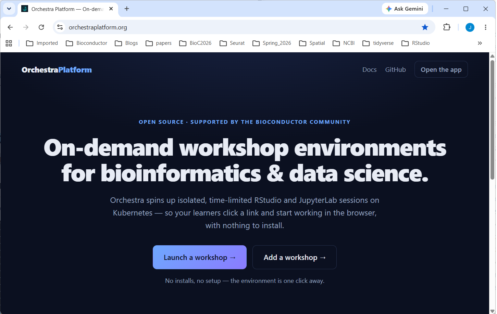
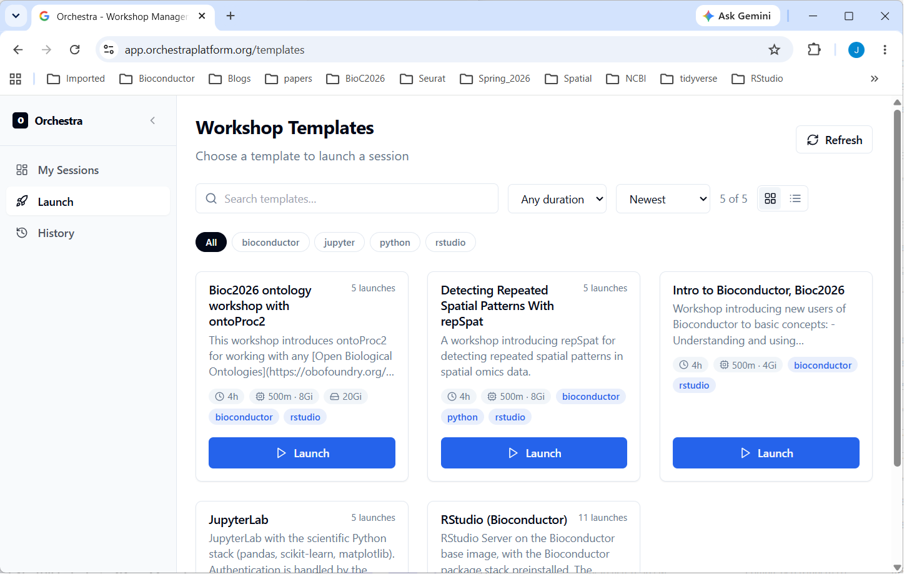
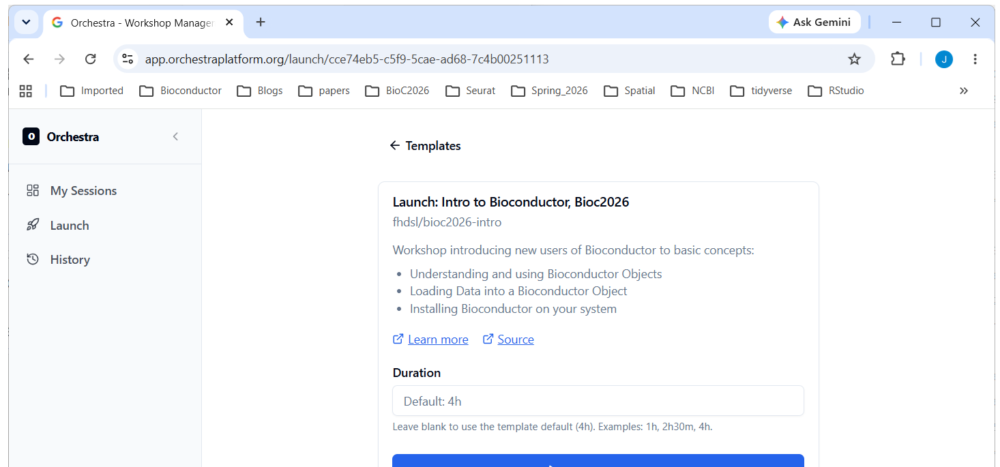
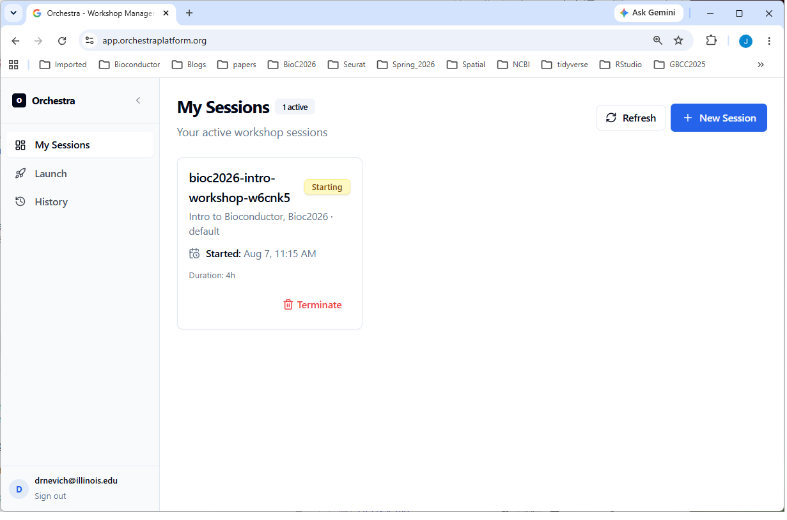
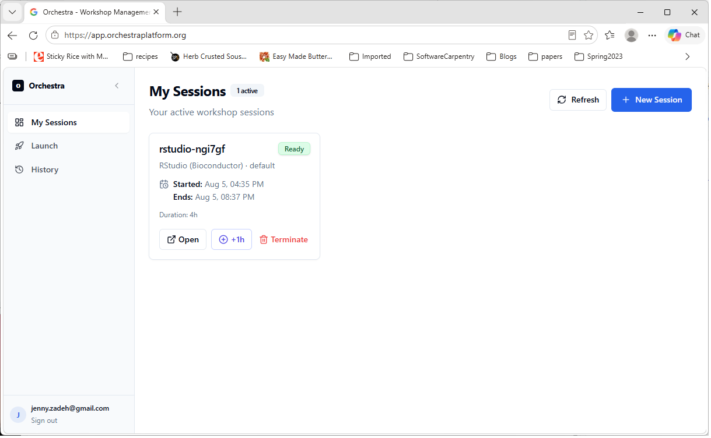
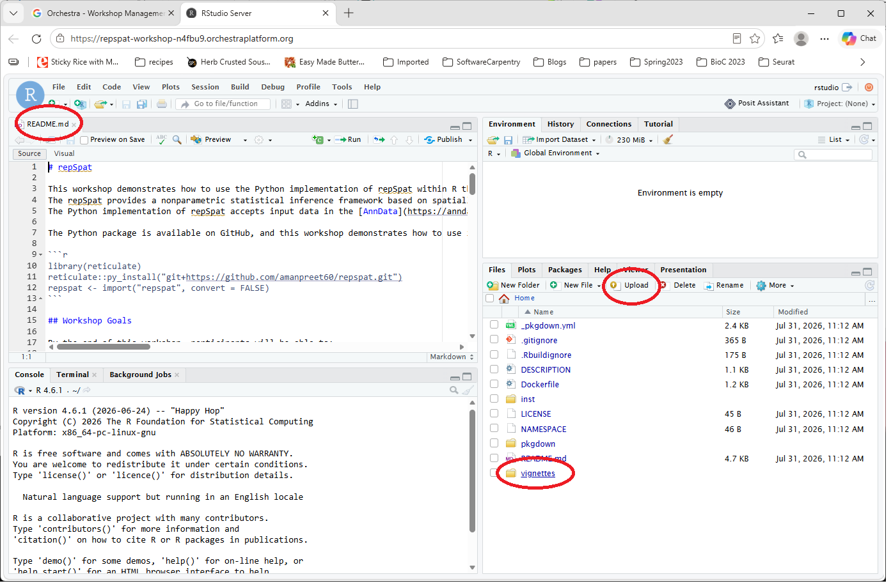
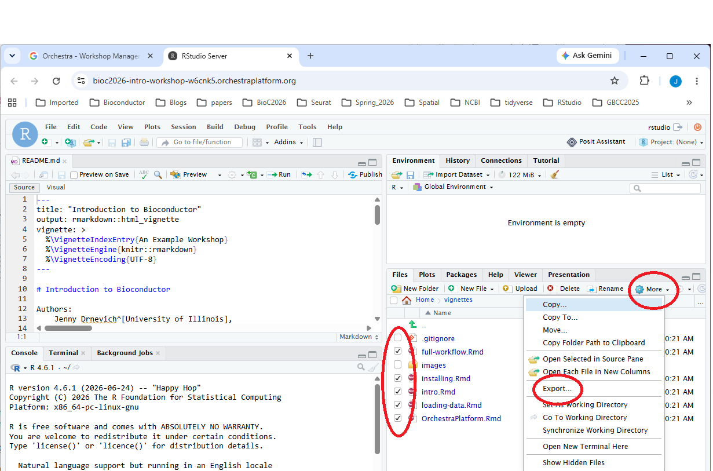
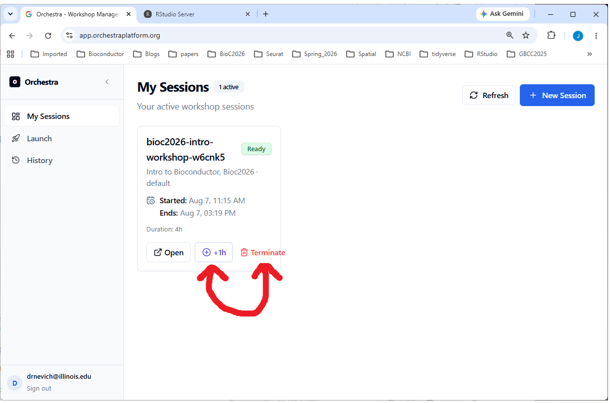

We will use a pre-configured RStudio instance hosted on OrchestraPlatfom for the hands-on part. Log in on any browser:

Sign in with a Google account. Any Google account works — a personal Gmail address or an institutional account backed by Google.
Click on “Launch” on left side (or + Browse Templates or + New Session) and pick the desired workshop (here: Intro to Bioconductor, Bioc2026)





Every session has a time limit, shown as a countdown on its session card in the first browser tab. This keeps the cluster available for everyone — but it means:
When a session expires (or you end it), everything in it is removed — including files you created. Download anything you want to keep — notebooks, scripts, results — before it expires. There is no way to recover a session after it’s gone.
To download files: in RStudio, tick the files in the Files pane, then More → Export…;

If you’re running low, use +1h on the session card in the first browser tab to extend it. You’ll see a warning as the deadline approaches, and again when it’s close.
When you’re done, choose Terminate on the session card in the dashboard to end the session and free up resources. If you’d rather not, that’s fine too — just close the tab and the session will clean itself up when the timer runs out. Either way, save your work first.

Stuck on Starting for a while — some images are large and take a few minutes on first launch. If it never reaches Ready, tell your instructor.
Session disappeared — it likely expired. Launch a fresh one; remember to save your work this time.
Can’t open it — your workshop may still be starting, or the session ended. Check the status on the dashboard.